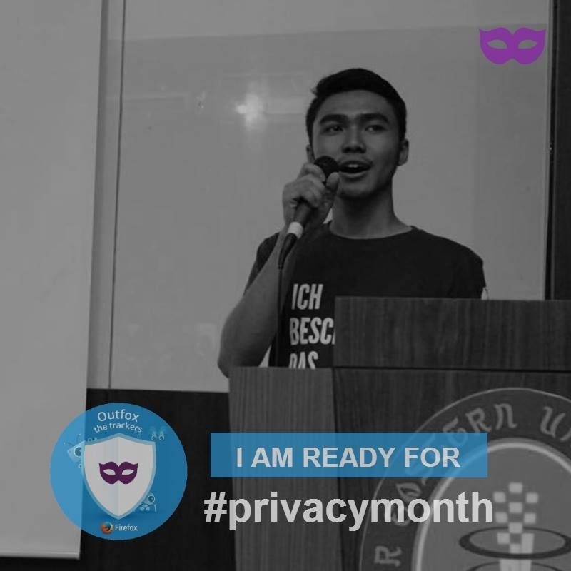

15 Privacy Tips to Protect Your Online Life
It’s becoming harder for people to safeguard themselves from the threats to the privacy of their online lives. Here are 15 tips to get you started.
With the internet becoming a popularly growing resource, not just for fun and leisure activities but also for learning and being aware of important things, it’s becoming harder for people to understand or safeguard themselves from the threats to the privacy of their online lives. Sometimes, the lure of sharing away that bit of super interesting information, makes us blindly ignore any kind of impact that we might have on our privacy.
In such a case, it’s very important for internet citizens to understand online privacy in a way that’s applicable to their online life. This might vary depending on the type of content one is looking at.
To address this problem, the Mozilla India community launched a “Privacy Month Campaign,” which originally started in January 2016 and is repeated every January. Why January? Because, the January 28 happens to be the International Data Privacy day, the whole month is observed as Privacy Month!
Most recently, other Mozilla communities joined the campaign to make a greater impact by sharing localised content. Some of these are Mozilla Italy, Brazil, Czech, Taiwan, Pakistan, Venezuela, Kenya and Hong Kong to name a few.
Here are the top privacy tips that we shared during this campaign:
Tip #15: Passwords are integral part of privacy. Choose them strong and long enough to defend yourselves. #privacymonth pic.twitter.com/H2f3oycybg
Tip #19: @duckduckgo for the win! Doesn’t track you. Privacy focussed. Relevant searches. Less clutter. Use it. #privacymonth pic.twitter.com/bQHuwqFdZC
Tip #14: @torproject Browser lets you surf anonymously, leaving no digital footprint. Happy surfing! #privacymonth Download Tor
Tip #6: Ever thought what permissions your mobile apps have? Customize them for each app to limit data access on devices. #privacymonth
Use privacy-favoring chat apps like Signal(Recommended by @Snowden) https://t.co/rm3gVZOOY0 and Wire #privacymonth pic.twitter.com/VgqAMV93Zf
Tip #7: Cover device cameras and plug-in fake audio jack to prevent mic access. #privacymonth https://t.co/A0rQ5e9JMi
Tip #2: Use/Enable 2-factor authentication (2FA) on the apps you use everyday! Learn more: #privacymonth https://t.co/oSAvGR0y3K
Tip #5: Some defaults are good like the Private Browsing on @firefox. Here’s how to enable it #privacymonth https://t.co/SMuCY5e6ab
Tip#4: Only click on the links with a known/legit source. Look for HTTPS links. #privacymonth #Advocacy4Privacy https://t.co/6NGWoDOhvt
Tip #23: Open/unknown WiFi hotspots could be bait. Always avoid connecting to them, use your own WiFi #privacymonth https://t.co/CS5JCdRp9c
Tip #22: Searching for a really good ad-blocker? We recommend @ublockorigin, efficient & open source #privacymonth https://t.co/kNOcEJEES0
Tip#3:Use a separate/free disposable email ID for offers, coupons to keep your primary email from spam #privacymonth https://t.co/ImQGUHTZle
Tip #10: @mailvelope add-on for @firefox and Chrome lets you send encrypted emails without a hassle! #privacymonth https://t.co/YFKm8Pv613
Tip #25: Enable remote wipe for your mobile devices and avoid a data disaster. Android: https://t.co/71WZFqBxZu, iOS: https://t.co/gaeOO8qVQi #privacymonth
Tip #28: Happy I18L Data Privacy Day! Update your Softwares! 🙂 Then share this badge using #DPD2017 #privacymonth https://t.co/clc3scgMf3
As the month of January comes to an end, Privacy Month Campaign for 2017 will also wrap up. However, let’s keep the spirit alive throughout the year by following the hashtags #Advocate4Privacy and #PrivacyMatters on social media. How can you be a part of this movement? Just share away! We look forward to changing statistics of Online Privacy, for the better, by next year. Until then, stay protected because privacy matters!
A big thank you to the amazing Mozilla volunteer community who developed this campaign!
Core Members: Ankit Gadgil, Siddhartha Rao, Mayur Patil, Vishal Chavan
Graphics Team: Biraj Karmakar, Tripad Mishra, Akshay Tiwari, Shalini Kr
Local Team: Chandan Baba, Viral Parmar, Nilima Chavan, Srushtika Neelakantam, Md Shahbaz Alam, Kamlesh Vilpura, Ronit Jadhav, Santosh Viswanatham, Vishwa Kotecha
Global Team: Daniele Mte90 Scasciafratte, Edoardo Viola, Semirah Dolan, Yuli RJ, Rein Ramirez, Odin, Willy Aguirre, Miguel Useche, Michal Stanke, Cynthia Pereira, Geraldo Barros, Dani Albarran, Hasan, Umer, Marquez John Christian